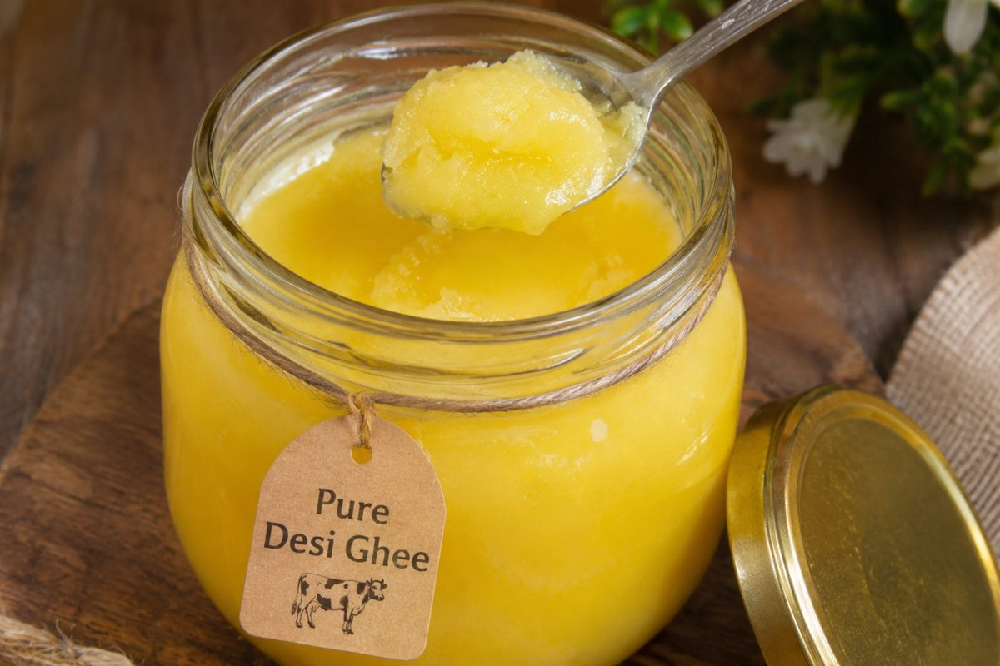

How to check if desi ghee is pure: 6 simple home tests
یہ مضمون اردو میں پڑھیںMuch of the "desi ghee" sold in Pakistan is mixed with banaspati, cheap vegetable oil, mashed potato or animal fat. Food authorities regularly seize adulterated ghee. These six home tests take a few minutes and help you spot the most common kinds of mixing.

6 ways to check desi ghee at home
1. Look at the texture (danedar test)
Leave the jar at room temperature for a few hours and look closely.
2. Heat a spoonful in a pan
Put one teaspoon of ghee in a hot pan on low heat.
3. Palm test
Put a little ghee on your palm and close your hand for a minute.
4. Fridge layer test
Melt some ghee in a glass jar, then keep it in the fridge for a few hours.
5. Iodine test for potato or starch
Melt one teaspoon of ghee and add 2–3 drops of tincture of iodine (sold at medical stores). Don't eat this sample afterwards.
6. Smell and taste
Warm a little ghee and taste a small amount.
Why adulterated ghee is a problem
You pay for desi ghee and get something cheaper. Ghee mixed with banaspati or reused oil can also contain trans fats, which raise the risk of heart disease. Unhygienic mixing can make food unsafe too.
Tips for buying pure desi ghee
- Buy from a seller who tells you where the milk comes from and how the ghee is made.
- Be careful with a price far below the market. Pure ghee takes about 20–25 litres of milk per kilo, so it can't be very cheap.
- Buy a small jar first and test it before ordering in bulk.
- Choose a seller that offers cash on delivery, so you see the product before paying.
Our Cholistani desi ghee is slow-cooked from desert cows' makhan in Bahawalpur. Rs 3,800 per kg, cash on delivery anywhere in Pakistan.
Order desi ghee